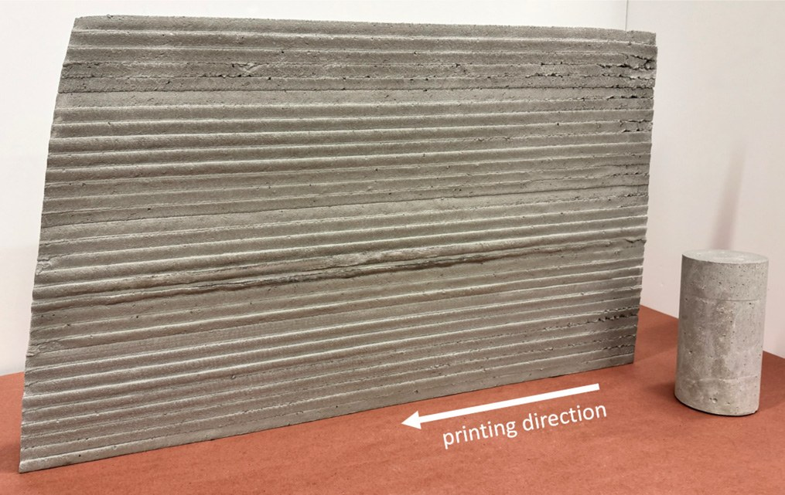
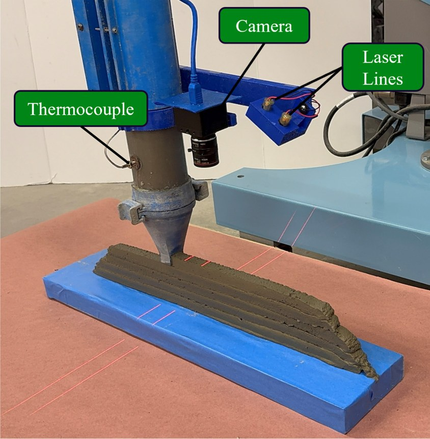
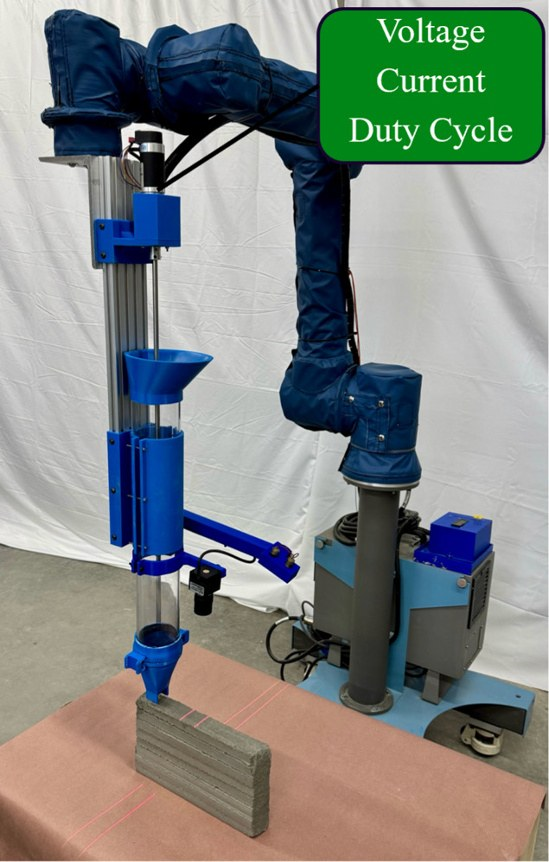
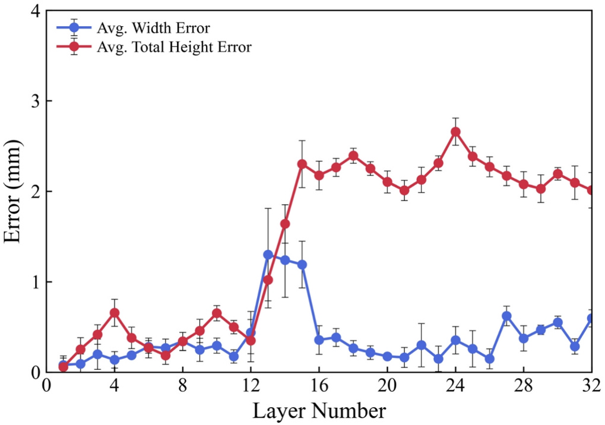

Constructive AI: autonomous robotic 3D printing of concrete
Concrete 3D printing is meant to automate construction, yet in practice an operator still stands beside the printer and keeps adjusting it by hand, because fresh concrete changes from one minute to the next. In this project I automated that judgment. A laser-based 3D vision system, a temperature probe and the extruder motor report what the material is doing, and AI models decide how fast to extrude it and how long to wait before the next layer. The complete cycle of sensing, deciding and adjusting the printer takes 0.6 seconds and repeats for as long as the robot prints. The result is the first AI-driven 3D-printed large-scale wall panel in the world: 32 layers of concrete deposited without anyone choosing the settings by hand, finishing within 0.39% of the target height.

to sense, decide and adjust the printer, start to finish
layers printed with the AI choosing the settings
height error: 510 mm built against a 512 mm target
average error in layer width, on 20 mm wide layers
Why concrete printing still depends on a human operator
A concrete 3D printer builds layer by layer. A robot extrudes a layer of fresh concrete, then another layer on top of it, and keeps stacking until there is a wall. No moulds, less waste, fewer people on site.
Two process parameters decide whether the wall comes out well. The first is the extrusion rate: how fast material is pushed through the nozzle. Too little leaves gaps, too much makes the layers bulge. The second is the interlayer delay: how long the robot waits before depositing the next layer. Too short and the soft layers underneath deform, too long and the build takes far more time than it needs.
The right values keep moving, because the material itself keeps changing.
Hover over each factor, or tap it, to see how it affects the print.
Concrete stiffens from the moment it is mixed
Cement reacts with water (hydration), so the mix gets steadily stiffer. Material that flowed easily early in a print needs more force later, and concrete left idle in the extruder between two layers stiffens further. An extrusion rate that was correct ten minutes ago can now give a layer that is too thin.
A warmer mix hardens faster
Temperature controls the speed of the hydration reaction. A warm mix gains strength sooner and can carry the next layer earlier. A cool mix stays soft for longer and needs more waiting time. The experiments in this study ran between 15 and 25 °C.
Dry air pulls water out of fresh layers
Moisture loss changes how a layer holds its shape and how well it bonds to the next one. Relative humidity during the experiments ranged from 35% to 65%.
No two batches are identical
Small differences in water content or mixing change how the material flows. To cover this, I trained the system on mixes ranging from stiff to very runny, measured as a slump flow of 150 to 220 mm, the standard test for how far fresh mortar spreads.
Every new layer loads the ones below it
The bottom layer of a 32-layer wall has to carry 31 others while it is still fresh. If the layers are stacked faster than the material gains strength, the deformation adds up and the wall can buckle or collapse.
How the robot knows what the concrete is doing
I designed and built a sensing system on the print head that measures the geometry of each layer, the state of the material and the load on the extruder, all while the robot is printing.
Hover over each sensor, or tap it, to see where it sits and what it measures.

Structured laser light 3D vision
Two parallel red laser lines are projected onto the freshly deposited layer at a fixed 40° angle, and a 4K camera mounted 150 mm above the nozzle tip looks straight down at them. Because the lines arrive at an angle, they shift sideways wherever the surface is higher. An image-processing algorithm I developed reads that shift and reconstructs the width and total height of the printed layers.
- Sub-millimetre accuracy
- 5.5 measurements per second
- Works while the print head is moving
- Runs on an NVIDIA Jetson Nano
Tells the AI: is the layer the right shape, and how much material is actually being deposited?
Material temperature at the nozzle
A K-type thermocouple is installed on the extruder next to the nozzle, with its probe inserted about 4 mm into the flowing material. It reads the temperature of the concrete just before it is deposited. Temperature governs how fast cement hydrates, so it indicates how quickly a layer will gain the strength to carry the next one.
- K-type thermocouple
- Probe 4 mm into the flow
- Sampled 25 times per second
Tells the AI: how fast is this material going to harden?

Electrical power of the extruder motor
Stiff concrete is harder to push than runny concrete. The motor controller reports the voltage, current and duty cycle of the extrusion motor, and from those the system calculates the electrical power the motor is drawing. Measuring stiffness properly normally means stopping to run a lab test. Motor power gives a continuous stand-in for it during the print, and it reads the material before it leaves the nozzle.
- Voltage, current, duty cycle
- Sampled 25 times per second
- No extra hardware in the material path
Tells the AI: how stiff is the material right now, before it is deposited?
How the AI learned what good printing looks like
By watching a lot of printing, good and bad. I printed 108 five-layer test specimens in a full-factorial experiment, deliberately covering easy and difficult conditions: runny and stiff mixes, slow and fast printing, short and long waits. The sensors recorded everything, and specimens with smaller geometric errors were given more weight in training, so the models learn the settings that lead to good layers.
Which machine learning model did each job best?
I trained four types of model on the same data, tuned each one automatically, and tested them on specimens they had never seen. There are two decisions to make, and a different model won each one.
Which input feature drives each decision?
The models do not see raw sensor signals. I condensed the signals into three physics-guided input features, each describing one aspect of the process. A sensitivity analysis (permutation feature importance) then shows how much each feature contributes to each decision.
Hover over each feature, or tap it, to see how it is calculated and where it matters.
Material flow
F = W × H × SMeasured layer width times measured total height times printing speed, in mm³ per second. It is the volume of concrete actually being deposited, taken from the laser vision system.
Most important for the extrusion rate (37.02%). That agrees with the physics: the extrusion rate exists to deliver the volume the target layer geometry needs.
Motor power
P = V × I × DVoltage times current times duty cycle of the extruder motor, in watts. It rises as the material stiffens, so it tracks how the material's flow behaviour evolves during the print.
A close second for the extrusion rate (34.47%) and the second most important feature for the interlayer delay (29.53%).
Material temperature
T, in °CRead by the thermocouple at the nozzle. Temperature sets the pace of cement hydration, and so how quickly a layer gains early strength and stiffness.
Most important for the interlayer delay (41.98%). A layer that hardens sooner can carry the next one sooner. The model was never told this. It found the relationship in the data, and it matches what concrete science says.
Contribution of each input feature
Permutation feature importance, in percent. Bars are drawn on a 0 to 50% scale.
From a sensor reading to a corrected printer in 0.6 seconds
The complete cycle, measured end to end.Acquiring the sensor data, transferring it, computing the features, running both AI models and applying the new setting to the printer. At the printing speed used for the wall panel (25 mm/s), the nozzle travels only 15 mm between one correction and the next.
This speed is what makes real-time control possible, and it comes from keeping every stage lightweight: a vision algorithm built for speed, three compact features in place of raw images, and models efficient enough to run on a small single-board computer mounted with the printer, with no server or cloud connection involved.
Sense
The camera, thermocouple and motor controller capture the layer geometry, the material temperature and the motor signals.
Extract features
The raw signals are averaged to suppress noise and converted into material flow, motor power and temperature.
Predict
XGBoost predicts the optimum extrusion rate. Random Forest predicts the interlayer delay.
Adjust
The new extrusion rate is sent to the printer while it is still depositing. Then the cycle starts again.
0 control cycles would have completed since you opened this page. The animation above is slowed down so you can follow it.
Printing a full wall panel with no one choosing the settings
For the final test the system printed a wall panel 850 mm long and 32 layers tall, using a concrete mix that was not in the training data. I then printed a second panel with one deliberate change, to check whether the AI's waiting times were really necessary.
Hover over each panel, or tap it, to see how it went.
All 32 layers, standing
The AI adjusted the extrusion rate continuously within each layer and chose the delay before every new layer, 6.5 minutes on average. The panel finished at 510 mm against a 512 mm target, with no visible deformation.
Collapsed after 8 layers
Same mix, same settings, and the AI still controlled the extrusion rate. The only change: each delay was set one level below the AI's recommendation, for example 1 minute where it asked for 5. The lower layers were still too soft, deformed badly, and the panel collapsed after only 8 layers.
This shows the AI's delays were not overly cautious. They were close to the shortest waits that keep the wall stable.
How close the printed wall came to the plan
Every extrusion rate and every interlayer delay was chosen by the AI during printing, with a material it had never been trained on.

Height. The wall was designed to be 512 mm tall and came out at 510 mm, a cumulative deformation of 0.39% across 32 stacked layers of fresh concrete.
Width. Each layer was designed to be 20 mm wide. The average deviation was 0.38 mm (1.9%) and the largest was 1.3 mm.
Self-correction. Concrete that sits in the extruder between layers stiffens, so some layers started slightly under-extruded. The system detected this through its sensors and raised the extrusion rate, and the rest of the layer came out right.
Speed. Every one of those corrections was computed and applied in 0.6 seconds.
What this changes for construction
Most automatic corrections in concrete printing today happen after a defect is already in the wall. This system also reads the material before it leaves the nozzle, so it can prevent problems as well as fix them. It needs no calibration runs for a new mix and does not need to be told the recipe. That is a step toward printers that can be trusted to build on their own, in a factory, on a job site, or in places where sending a crew is difficult.
There is more to do. The tests used plain cement mixes and three fixed interlayer delays. Next steps are fibre-reinforced and other mixes, wider ambient conditions, continuous control of the delay, and automating the mixing and pumping as well.
Terms you will see in the paper
Extrusion rate
How fast the printer pushes concrete out of the nozzle. In this printer it is the speed of the motor that drives the material, measured in revolutions per minute.
Interlayer delay
The waiting time between finishing one layer and starting the next, so the lower layer can gain enough strength.
Structured laser light (SLL) 3D vision
A way to measure shape with an ordinary camera. Laser lines are projected onto an object at an angle. The lines shift where the surface rises, and the amount of shift gives the height and width.
Closed-loop control
A system that measures its own output and uses the measurement to correct itself, like a thermostat. The opposite is running fixed settings and hoping for the best.
Input feature
A quantity calculated from the raw sensor data and given to a machine learning model as input. Here there are three: material flow, motor power and temperature.
XGBoost and Random Forest
Two machine learning methods that combine many decision trees, each one a chain of yes-or-no questions about the data. XGBoost was the best at predicting the extrusion rate, and Random Forest was the best at choosing the interlayer delay.
Constructive AI: autonomous robotic 3D printing enabled by AI-driven process control and 3D machine vision
Kasra Banijamali and Ali Kazemian. Automation in Construction, volume 192, 2026, article 107281.
DOI: https://doi.org/10.1016/j.autcon.2026.107281
Open the paper